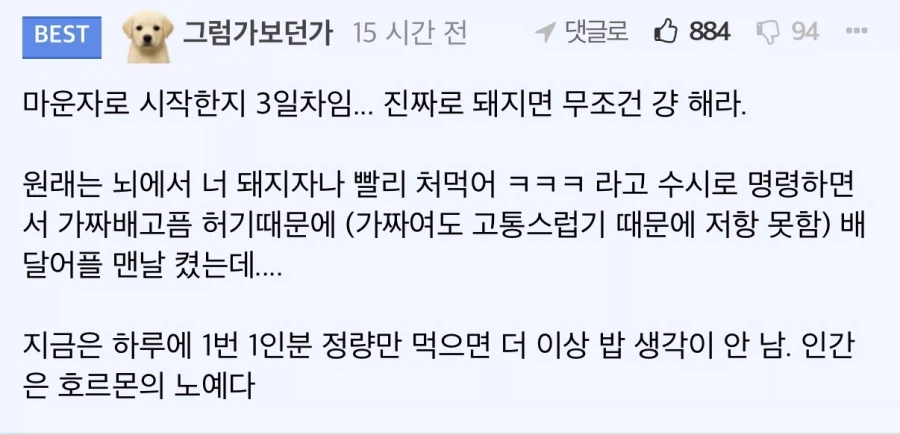

뇌에서 항상 너 돼지자나 빨리 처먹어 ㅋㅋㅋ라고 명령(?) 내리는데
그게 사라진다고 함
돼지들은 머릿속에서 내면의 기가돼지랑 항상 그런 사투를 벌이고 있던 거였다고..?

뇌에서 항상 너 돼지자나 빨리 처먹어 ㅋㅋㅋ라고 명령(?) 내리는데
그게 사라진다고 함
돼지들은 머릿속에서 내면의 기가돼지랑 항상 그런 사투를 벌이고 있던 거였다고..?
반년 후부터 효과보는 사람들도 있는마당에 2주따리가 개소리 운운은 ㅋㅋ
이거 안느껴지는거면
너 진짜 심각한 수준의 씹돼지임...
난 금요일 점심먹고 안먹다가 일요일 저녁먹었었는데 밥먹는거 귀찮아서
돼지련이 어딜 기가채드의 기가를 입에 올리는가
")
bmi30 못찍어본 것들은 위고비, 마운자로 이야기에서 아가리해야함
자랑?
맞는말
걍 담배라고 생각하면 됨
고도비만한테 과식은 흡연보다 더 중독성이 심함
김신영은 10년을 참았는데도 결국 고삐 풀리자마자 6주만에 원래 체중으로 돌아갔잖아
나도 4년 참고있는데, 3주 주면 10kg 찌는거 쌉가능
존나 부럽다 나 지금 위고비 3달차인데 효과 못느끼겠음 시발 주사 방법도 지키고있는데
ㄷㄷ 유전자 짱세네
용량 올렸봤엉???
ㅇㅇ 마운자로 1단계로 시작해서 위고비로 바꾸고 지금 3단계 시작한지 일주일
용량 몇임?
내 기준 1.0까지는 별 효과 없다가 1.7부터 효과보기 시작함
아 그래?? 나 지금 1.0 들어간지 일주일쯤됐음
ㅋㅋㅋ 나 1.0 때 치킨피자 입에 달고살았었음ㅋㅋ
1.7, 2.4 부터 진짜 막히는 느낌 나더라
물이나 제로음료 많이먹어
그리고 위고비 하다가 마운자로로 넘어간적도 있는데
오히려 식욕억제는 위고비가 더 좋았었음
지금은 2.4 구매해서 1.2씩 나눠맞기 하는중
한달에 20만원 이하 개꿀
나눠맞기해도 효과 있음??? 그럼 괜찮네
ㅇㅇ 유지할때는 약하게 나눠맞기가 좋더라
뺄때는 쌘거 완빵으로하고
만자로 8개월차다 질문받는다
한달 얼마냐
나도 오래했는데 식욕이 왜 안 줄어드냐
최대한 덜먹으려고 식사 15분 전에 프로틴쉐이크 한사발하고 하는데(혈당조절용)
그래도 식욕이 안줄어든다
그래도 덜먹으려고 노력은 하는데
문제는 예전이나 지금이나 식욕에있어서 달라진 점을 못느끼겠다
용량이 부족한것
그런거라고 생각하고 12.5 다음달에 맞을 준비중
와 난 5미리 유지중인데
그냥 사람마다 다르다고 생각하고 꾸준히 맞는 중이야 적은 용량으로 빼는 사람들 넘 부럽다
나 살뺄때 하루 물 7~8리터씩 먹었음
물 많이먹어도 안좋은건 알지만 치킨피자보단 좋을꺼니까 ㅋㅋㅋㅋ
배달좀 그만 쳐먹으면 안 되냐?? 먹지 말라는 게 아니라 나가서 픽업하거나 해먹으면 되는데
띠용
먹는 양의 문제가 아니라
씹다보면 알아서 목으로 넘어가던게
투약후에는
'넘겨' 라고 목에 명령해야 삼키는 수준이 되어버림
저걸로 빼면 무조건 요요오지
걍 맞으면 토할거같아서 밥을 못먹겠던데
돼지는 심지어 안먹으면 배고프다 못해 배아파서 먹어야함
조니가 항상 쳐먹으라고 협박함
저것 플러스 평상시 먹던대로 먹으면 과식 한것처럼 토할것같음
마운자로 맞은지 몇달째인데 요즘 회사에서 점심식사량 보면 여직원보다 내가 덜 먹는것같음
가격좀 내려다오
중고딩 운동선출이라 20후반까지 180/69였음. 100키로 유도부 친구가 놀랄정도로 많이 먹었고 살안찌는 체질이라 생각했는데 30대되면서 95키로까지 쪘음.
진짜 배튀어나오고 운동능력 박살난거 보면 한심하고 다이어트 하고싶은데 계속 배고프고 움직이기 힘들고 숨차고 힘듬.
금연보다 더 힘든듯?
작년에 애 나오고 17키로 빠짐. 내가 낳은건 아님
이게 안먹을땐 계속 안먹을수있는데 배고픈 상태에서 먹는순간 끊임없이 들어감 천천히먹으면 포만감 느껴져서 좀 낫긴한데 절대량 자체가 이미 나 살찔래여서 크게 도움안됨
개서리여 2주차인데 아무느낌도 안듦